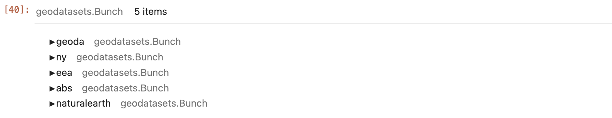

26.0 -- Intro to Geospatial Analysis
Prerequisites¶
Open a terminal in your class conda environment and install a couple geospatial libraries we'll need for this exercise:
conda install -c conda-forge geopandas folium geojson geodatasets cartopy pyproj -y
Python geospatial tools: Folium, Shapely, GeoPandas¶
A simple folium Map¶
The main class object in folium is Map. The typical workflow is to init an
instance of this class with a set of optional arguments, and then to add
additional marker types to it after it is initialized by using either the Map
object's .add_child() function, or the add_to() function of other objects
that can act as children of a Map.
I tend to call my map instance variables something like fmap, since map
is a reserved function name from the Python builtins. Here is a simple example
map generated by setting a center position in latitude longitude coordinates
and a zoom level.
import folium
fmap = folium.Map(location=[40, -100], zoom_start=4)
fmap
Here is a slightly more complex example, in this case we set the name of the tile set to use (more on this below), and we add a Marker, which appears as an icon on the map at the specified coordinates. You can zoom in or out and the icon will remain visible. It also includes a popup that will appear when clicked.
You can see that I create the marker class instance as a separate object, and
then add it to the existing map by using the .add_child function call.
location = [40.7401, -73.9891]
fmap = folium.Map(location, zoom_start=12, tiles="openstreetmap")
marker = folium.Marker(location, popup="End Point Corporation")
fmap.add_child(marker)
fmap
Tile layers (basemaps)¶
The tile layer set represents a form of raster, a bitmap image that is
shown on the root of the page. By default folium supports a number of
free tile sets that can referenced by name, and which you can find examples
of here: https://leaflet-extras.github.io/leaflet-providers/preview/. In addition
to the shortcut names for these tilemaps, they can be referenced in the form
of a URL like the following: https://{s}.tile.openstreetmap.org/{z}/{x}/{y}.png.
The format of a tile layer URL is that of a REST API. This is because tiles
are actually loaded dynamically by leaflet maps (and by other similar types
of map visualization tools like Google Maps). The {s} is the URL is for the
server name, the {z} is the level of zoom, and the {x} and {y} is for
the position on the globe. When you open a map, or change its zoom, or
scroll to a new position on it, this triggers an event that will make a request
to the API to fetch new tiles.
The sets of free tile layers usually vary in providing more or less details on roads, colors, land categories, and labels. Some free tile layers require API keys, which requires registering with the host, and is usually associated with keeping track of your usage so that your account doesn't hog all the request resources. We'll stick with keyless tile layers for simplicity.
fmap = folium.Map(
location=[47, -120],
zoom_start=7,
tiles="https://basemap.nationalmap.gov/arcgis/rest/services/USGSTopo/MapServer/tile/{z}/{y}/{x}",
attr="Tiles courtesy of the U.S. Geological Survey", # the source of the tileset shown in the lower-right
)
fmap
tiles
argument in the previous code. It's also courteous to update the attr with
the recommended attribution for the tile provider.
Plotting points, lines, and shapes: Geographical vector objects¶
So far we have only been plotting tile layers for which the underlying
colored image is a raster, or a bitmap image. In this tutorial we will
focus on how vector type data is created, used, and stored. And how it can
serve as data for conducting scientific analyses.
Python geographical libraries¶
In this tutorial we will explore the use of several scientific libraries for working with geospatial data in Python. Some of these provide similar functions, but each has specific benefits and so it is worth becoming familiar with most of these packages.
import geodatasets
import geojson
import geopandas
import pandas as pd
import pyproj
import shapely
from cartopy import crs as ccrs
GeoJSON format¶
GeoJson is a file format used to store 'geometry' type objects, such as points, polygons, etc, that can be used to draw vectors markers/shapes onto a coordinate map. In other words, it is used to store the vector information for a geographic dataset in JSON format. Because JSON is very flexible it can be used by most modern geospatial libraries, and thus works across languages and systems.
GeoJson is composed of an array of features that can be grouped into
a FeatureCollection. We'll demonstrate examples of creating, plotting, and
saving GeoJSON files here. Please read the link above for more details on the
GeoJSON format.
Shapes with shapely¶
Shapely is simple but powerful library for computing distances, overlaps,
areas, and other set or mathematical operations on points, lines, or shapes.
The documentation is quite good https://shapely.readthedocs.io/en/stable/manual.html. The base
class objects here are very generalized and are used as dependencies in several other Python libraries, such as geopandas.
Shapely geometry class objects are created by providing a set of coordinates in decimal latitude and longitude values to the class constructors. The class instances show an SVG representation of the data, and the instances can be used to access a suite of attributes and functions of geometry objects for doing calculations on geometries. Supported geometry types include all of those in the GeoJSON spec, such as Points, Polygons, etc.
# create a Point instance
shapely.geometry.Point(44.0, -74.5)
# create a Polygon instance
shapely.geometry.Polygon([
(44.0, -74), (45.0, -75), (45.0, -76), (43.0, -76),
])
Calculations with geometries¶
Simple calculations with geometries, such as the distance between them, or
the area they occupy, can be easy to compute. But keep in mind the units that
are being represented. Often you will need to take these results and translate
them into a particular coordinate projection system. This topic can be
complicated, but there are nice libraries for doing it, such as the pyproj
example below.
# create two points
point1 = shapely.geometry.Point(44.0, -74.5)
point2 = shapely.geometry.Point(43.0, -73.5)
# get linear distance between points
linear_dist = point1.distance(point2)
print(f"linear unit-less distance: {linear_dist:.2f}")
linear unit-less distance: 1.41
Now we instead project these points to calculate the distance over the curvature of the Earth:
# get geodetic (great circle) projection object
geod = pyproj.Geod(ellps='WGS84')
# get results of projecting points to new space
angle1, angle2, distance = geod.inv(point1.x, point1.y, point2.x, point2.y)
# print results (divide by 1000 to get in units of kms)
print(f"WGS84 distance in Kilometers: {distance / 1000:.2f}")
WGS84 distance in Kilometers: 115.77
Geopandas: working efficiently with geometries in Python¶
GeoPandas is an open source project to make working with geospatial data in python easier. GeoPandas extends the datatypes used by pandas to allow spatial operations on geometric types. Geometric operations are performed by shapely. Geopandas further depends on fiona for file access and descartes and matplotlib for plotting.
You can find a lot of geographic data available online as GeoJson files. I found this dataset with polygons for the outline shapes of countries and state data with a google search.
The geopandas library provides a convenient interface to storing and
accessing multiple features from a GeoJson file in Python. You just load
the json file and then interact with it as you would any dataframe, where
the geometry column in this case contains shapely geometries.
Loading geospatial data from geodatasets¶
geodatasets.data

nybb_gdf = gpd.read_file(geodatasets.get_path("ny.bb"))
nybb_gdf
Writing geodataframes to GeoJSON files¶
You can write any GeoDataFrame to local disk and set the format using
the driver argument.
nybb_gdf.to_file("nybb.geojson", driver="GeoJSON")
Building geodataframes manually¶
points_gdf = gpd.GeoDataFrame({
'geometry': [shapely.geometry.Point(1, 1),
shapely.geometry.Point(2, 2)],
'attribute1': [1, 2],
'attribute2': [0.1, 0.2]})
points_gdf
Creating a geodataframe from a pandas df¶
cities_df = pd.DataFrame(
{'City': ['Buenos Aires', 'Brasilia', 'Santiago', 'Bogota', 'Caracas'],
'Country': ['Argentina', 'Brazil', 'Chile', 'Colombia', 'Venezuela'],
'Latitude': [-34.58, -15.78, -33.45, 4.60, 10.48],
'Longitude': [-58.66, -47.91, -70.66, -74.08, -66.86]})
cities_gdf = gpd.GeoDataFrame(
cities_df, geometry=gpd.points_from_xy(cities_df.Longitude, cities_df.Latitude))
cities_gdf
Geodataframe attributes¶
All the attributes that are defined in shapely for objects, are available in GeoSeries. When you retrieve these from a GeoDataFrame however, you should note that they will be calculated based on the active geometry column.
area: shape area (units of projection see projections)bounds: tuple of max and min coordinates on each axis for each shapetotal_bounds: tuple of max and min coordinates on each axis for entire GeoSeriesboundary: a lower dimensional object representing the objects set-theoretic boundary.geom_type: type of geometry.is_valid: tests if coordinates make a shape that is reasonable geometric shape according to the Simple Feature Access standard.
nybb_gdf.columns
Index(['BoroCode', 'BoroName', 'Shape_Leng', 'Shape_Area', 'geometry'], dtype='object')
Add boundary and centroid geometries to the nybb geodataframe.
nybb_gdf["boundary"] = nybb_gdf.boundary
nybb_gdf["centroid"] = nybb_gdf.centroid
nybb_gdf
Plotting geodataframes¶
Similar to pandas, if you call the `plot()`` method of GeoDataFrame it will plot the active geometry column of it.
nybb_gdf.plot()
I normally will prefer exlore() as this opens a folium-driven interactive
map.
nybb_gdf.explore()

You can customize this and plot specific attributes of the GeoDataFrame. In the following, we will calculate the area of each object in the GeoDataFrame and plot it.
nybb_gdf["area"] = nybb_gdf.area
nybb_gdf.explore("area", legend=True)

Merging datasets and coordinate reference systems¶
Let's load in two new datasets, the "Chicago Community Area Population Percent Change for 2000 and 2010" and the "Chicago supermarkets" datasets.
chicago = gpd.read_file(geodatasets.get_path("geoda.chicago_commpop"))
groceries = gpd.read_file(geodatasets.get_path("geoda.groceries"))
Look at the attributes of the first few chicago communities, and also plot the dataset on a map.
chicago.head()
chicago.explore()
Using what we have learned before, we can explore a bit the data by plotting
one of the attributes on the map. It looks like POPPERCH specifies the
percent change in population, so try plotting this attribute.
chicago.explore("POPPERCH")
Look now at the groceries data, both the attributes and on a map.
groceries.head()
groceries.explore()
If we want to merge these two datasets we have to make sure they are using the same coordinate reference system, so let's check.
display(chicago.crs)
print()
display(groceries.crs)
Oops, looks like they are not in the same CRS so we'll have to reset one of them so they are the same.
chicago = chicago.to_crs(groceries.crs)
Now we can plot these both on the same map:
# Capture the folium map of the first call and pass it to the second call
fmap = chicago.explore()
groceries.explore(m=fmap)

Merging data with spatial joins¶
A question could arise of how many grocery stores there are within each community. We have this data, so how can we answer this question. We can use a 'spatial join' to create a new geodataframe from the two we have.
sjoin takes two main arguments how and predicate that determin it's behavior.
The how argument specifies the type of join that will occur and which geometry is retained in the resultant GeoDataFrame. It accepts the following options:
left: All features from the first or left GeoDataFrame are kept, regardless if the features meet the specified spatial relationship criteria for a join. As all attribute fields are combined, rows that do not have a match with the right dataset may have null values in the fields that originated from the right GeoDataFrame.right: All features from the second or right GeoDataFrame are kept, regardless if the features meet the specified spatial relationship criteria for a join. As all attribute fields are combined, rows that do not have a match with the left dataset may have null values in the fields that originated from the left GeoDataFrame.inner: Only features from both datasets that meet the spatial relationship for the joined are kept. The geometries from the first or left GeoDataFrame are used for the join.outer: Keep all features from both datasets.
The predicate argument specifies how GeoPandas decides whether or not to join the attributes of one object to another, based on their geometric relationship. The default spatial index in GeoPandas currently supports the following values for predicate which are defined in the Shapely documentation:
- intersects
- contains
- within
- touches
- crosses
- overlaps
groceries_with_community = groceries.sjoin(chicago, how="inner", predicate='intersects')
groceries_with_community[["community", "Chain"]].head()
Now we can count the number of stores per community with a pandas groupby.
store_counts = groceries_with_community.groupby("community").size().reset_index(name="store_count")
store_counts
And merge the store counts data back into the chicago community gdf.
chicago = chicago.merge(store_counts, on="community", how="left")
chicago
Now we can plot the new data on the map. Bam!
chicago.explore("store_count")